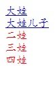

CSS选择符
- 1.通配选择符
*号表示所有的对象,所谓通配选择符，就是指可以使用模糊指定的方式来对对象进行选择，指定样式
例：
*{
color:blue;
margin:0;
padding:0;
}
- 2.元素选择符
所谓元素选择符，指以网页中已有的标签名作为名称的选择符。
例：
body {}
h1 {}
p {}
a{}
3.群组选择符
除了可以对单个标签进行样式指定外，还可以对一组标签进行相同的样式定义。标签与标签之间用逗号隔开
例：
h1,h2, h3, p { font-size:12px; font-family:arial; }4.关系选择符
(1).E F
语法：E F { }
选择所有被E元素包含的F元素。
(2).E>F
子选择符，选择所有作为E元素的子元素F
例：
h1 > strong {color:red;}
<h1>This is <strong>very</strong> <strong>very</strong> important.</h1>
(3).E+F
相邻选择符，选择紧贴在E元素之后F元素
例：
<style>
.son1+div {
color: red;
}
</style>
<div class="father">
<div class="son1">
<a href="#">大娃</a>
<div class="grandson">
<a href="#">grandson</a>
</div>
</div>
<div class="son2">二娃</div>
<div class="son3">三娃</div>
<div class="son3">四娃</div>
</div>
</body>
效果图：
(4).E~F
兄弟选择符，选择E元素所有兄弟元素F。
例：
<style>
.son1~div {
color: red;
}
</style>
<div class="father">
<div class="son1">
<a href="#">大娃</a>
<div class="grandson">
<a href="#">grandson</a>
</div>
</div>
<div class="son2">二娃</div>
<div class="son3">三娃</div>
<div class="son3">四娃</div>
</div>
效果图：

nth-child()
.son:nth-child(2n+1){
background-color: skyblue;
}
规定属于其父元素的奇数元素的每个的背景色为：skyblue
<!DOCTYPE html>
<html>
<head>
<meta charset="UTF-8">
<title></title>
<style>
.son{
width: 200px;
height: 200px;
background-color: red;
}
.son:nth-child(2n+1){
background-color: skyblue;
}
</style>
</head>
<body>
<div class="web">
<div class="son">1</div>
<div class="son">2</div>
<div class="son">3</div>
<div class="son">4</div>
</div>
</body>
</html>